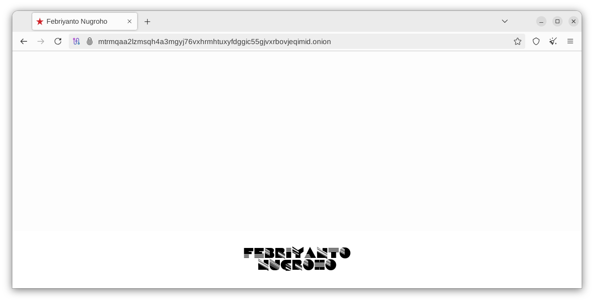

Bikin hidden service (tor) .onion di FreeBSD
Instalasi Tor
Via pkg (binary package)
sudo pkg install tor
Konfigurasi hidden service
sudo nano /usr/local/etc/tor/torrc
Tambahkan baris berikut di akhir file:
HiddenServiceDir /usr/local/etc/tor/hidden_service/ HiddenServicePort 80 127.0.0.1:8080
Bikin direktori hidden service
sudo mkdir -p /usr/local/etc/tor/hidden_service sudo chown -R _tor:_tor /usr/local/etc/tor/hidden_service
Aktifin dan jalanin tor
Aktifin tor pas boot:
sudo sysrc tor_enable=YES
Jalanin tor:
sudo service tor start
Dapetin alamat .onion
sudo cat /usr/local/etc/tor/hidden_service/hostname
Contoh output:
v3exampleonion234567890abcde1234567890abcdef1234567890abcdef.onion
Konfigurasi apache
Edit file /usr/local/etc/apache24/httpd.conf
Tambahin ini Listen 127.0.0.1:8080 dibawah Listen 80
Contoh:
Listen 80 Listen 127.0.0.1:8080
Di save terus restart apache
sudo service apache24 restart
Masalah permission
Misal dapet error kaya gini pas coba start tor
Starting tor. Jun 03 12:58:22.526 [notice] Tor 0.4.8.16 running on FreeBSD with Libevent 2.1.12-stable, OpenSSL 3.0.13, Zlib 1.3.1, Liblzma 5.4.5, Libzstd 1.5.6 and BSD 1402000 as libc. Jun 03 12:58:22.526 [notice] Tor can't help you if you use it wrong! Learn how to be safe at https://support.torproject.org/faq/staying-anonymous/ Jun 03 12:58:22.527 [notice] Read configuration file "/usr/local/etc/tor/torrc". Jun 03 12:58:22.529 [warn] /usr/local/etc/tor/hidden_service/ is not owned by this user (_tor, 256) but by root (0). Perhaps you are running Tor as the wrong user? Jun 03 12:58:22.530 [warn] Failed to parse/validate config: Failed to configure rendezvous options. See logs for details. Jun 03 12:58:22.530 [err] Reading config failed--see warnings above. /usr/local/etc/rc.d/tor: WARNING: failed to start tor
Caranya:
sudo chown -R _tor:_tor /usr/local/etc/tor/hidden_service/
Kemudian pastikan permission-nya aman (minimal readable & writable oleh _tor saja)
sudo chmod 700 /usr/local/etc/tor/hidden_service/
Restart tor
sudo service tor restart
Kalo berhasil kek gini:
Starting tor. Jun 03 12:59:15.152 [notice] Tor 0.4.8.16 running on FreeBSD with Libevent 2.1.12-stable, OpenSSL 3.0.13, Zlib 1.3.1, Liblzma 5.4.5, Libzstd 1.5.6 and BSD 1402000 as libc. Jun 03 12:59:15.152 [notice] Tor can't help you if you use it wrong! Learn how to be safe at https://support.torproject.org/faq/staying-anonymous/ Jun 03 12:59:15.152 [notice] Read configuration file "/usr/local/etc/tor/torrc". Jun 03 12:59:15.163 [notice] Opening Socks listener on 127.0.0.1:9050 Jun 03 12:59:15.163 [notice] Opened Socks listener connection (ready) on 127.0.0.1:9050 Jun 03 12:59:15.163 [warn] Fixing permissions on directory /var/db/tor
Hasilnya:

Install tor browser di client, misal ubuntu
sudo add-apt-repository universe sudo apt install torbrowser-launcher
Run
torbrowser-launcher